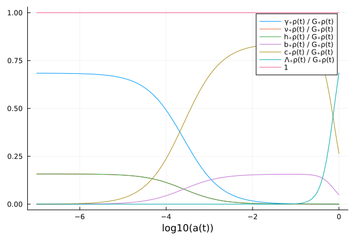
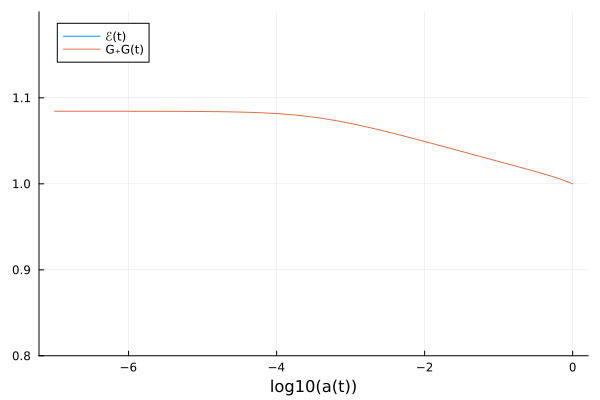
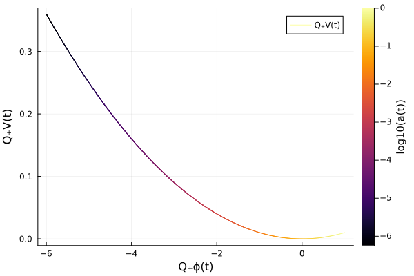

Models
ΛCDM
SymBoltz.ΛCDM — FunctionΛCDM(;
recombination = true,
g = metric(),
G = general_relativity(g),
γ = photons(g),
ν = massless_neutrinos(g),
h = massive_neutrinos(g),
c = cold_dark_matter(g; name = :c),
b = baryons(g; recombination, name = :b),
Λ = cosmological_constant(g),
kwargs...
)Create a ΛCDM model.
using SymBoltz, Plots
M = ΛCDM()
pars = parameters_Planck18(M)
sol = solve(M, pars)
plot(sol, log10(M.g.a), [M.γ.ρ, M.ν.ρ, M.h.ρ, M.b.ρ, M.c.ρ, M.Λ.ρ, M.G.ρ] ./ M.G.ρ)
Brans-Dicke ΛCDM
SymBoltz.BDΛCDM — FunctionBDΛCDM(; name = :BDΛCDM, kwargs...)Create a ΛCDM model, but with the Brans-Dicke theory of gravity instead of General Relativity.
Shoot for parameters that give E = G = 1 today:
using SymBoltz, ModelingToolkit
M = BDΛCDM()
D = Differential(M.t)
pars_fixed = [parameters_Planck18(M); M.G.ω => 100.0; D(M.G.ϕ) => 0.0] # unspecified: M.Λ.Ω0, M.G.ϕ
pars_guess = [M.G.ϕ => 0.95, M.Λ.Ω0 => 0.7] # initial guesses for shooting method
pars_shoot = shoot(M, pars_fixed, pars_guess, [M.g.ℰ ~ 1, M.G.G ~ 1]; thermo = false, backwards = false) # exact solutions
pars = [pars_fixed; pars_shoot] # merge fixed and shooting parameters9-element Vector{Pair{Symbolics.Num, Float64}}:
h => 0.6736
γ₊T0 => 2.7255
c₊Ω0 => 0.26447041034523616
b₊Ω0 => 0.049301692328524445
b₊rec₊Yp => 0.2454
G₊ω => 100.0
Differential(t)(G₊ϕ(t)) => 0.0
G₊ϕ(t) => 0.9267309293549412
Λ₊Ω0 => 0.7021460394730146Solve background and plot scalar field and Hubble function:
using Plots
sol = solve(M, pars, thermo = false, backwards = false)
plot(sol, log10(M.g.a), [M.g.ℰ, M.G.G], ylims=(0.8, 1.2))
Quintessence-CDM
SymBoltz.QCDM — FunctionQCDM(v; name = :QCDM, kwargs...)Create a ΛCDM model, but with the quintessence scalar field in the potential v as dark energy instead of the cosmological constant.
using SymBoltz, ModelingToolkit, Plots
@parameters V0 N
V(ϕ) = V0 * ϕ^N
M = QCDM(V)
D = Differential(M.t)
pars = [parameters_Planck18(M); M.Q.ϕ => 1; M.Q.V0 => 1e-2; M.Q.N => 2]
sol = solve(M, pars, thermo = false; guesses = [D(M.Q.ϕ) => +1.0])
plot(sol, M.Q.ϕ, M.Q.V, line_z = log10(M.g.a)) # plot V(ϕ(t))